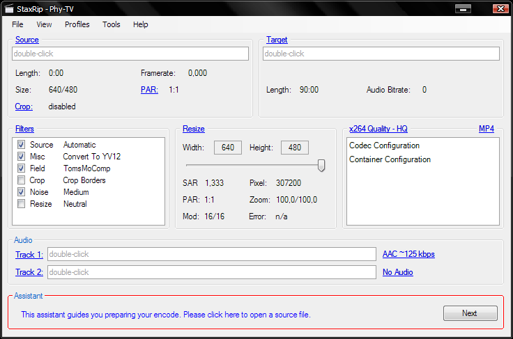

Comment bien compresser une vidéo et ainsi devenir encore plus célèbre
L'écran de base de StaxRip doit ressembler à l'image ci-dessous. Si ce n'est pas le cas, revenez à l'installation.

Laissez-vous tout simplement guider par l'assistant (cadre du bas), il a été fait pour ça !
Quelques indications importantes cependant (à lire avant de "Add a job" !) :
- Dans open file cliquez sur le bouton Single pour compresser juste une vidéo.
- Dans le cadre Source, il vous faut spécifier en cliquant sur PAR le ratio d'affichage de la vidéo. En effet, le rapport largeur/hauteur de la vidéo stockée est différent de celui de la vidéo affichée lors de la lecture. La vidéo est alors dite anamorphique. Spécifier un mauvais ratio peut faire apparaître l'image comme étirée ou au contraire écrasée (ça se voit surtout au niveau des visages). En pratique, donnez le ratio avec lequel la caméra a tourné (16:9 PAL ITU ou 4:3 PAL ITU).
- Si vous utilisez la fonction resize, n'oubliez pas d'appuyer sur CTRL en faisant glisser la barre de redimensionnement afin de conserver la vidéo anamorphique.
- Parfois il arrive que StaxRip n'arrive pas à ouvrir une vidéo et vous renvoie un message d'erreur genre "can't open frame 0" ou autre. Dans ce cas, essayez différentes fonctions pour ouvrir le fichier en changeant Source dans le cadre Filters.